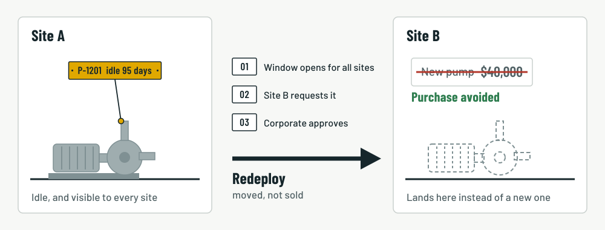

Home / Guides / Internal redeployment
Internal redeployment of surplus equipment: a practical guide
When a plant has equipment it no longer needs, the default path is to sell it to an outside buyer or scrap it. Often the better move is to use it somewhere else in the same company. That’s internal redeployment, and it is frequently the highest-value result an investment recovery team can deliver, because it avoids buying something new.
What internal redeployment is
Internal redeployment means moving an idle asset to another site, unit, or department in the same company instead of selling it. The asset might be a pump, a motor, a heat exchanger, a tank, or a full production line. What matters is that another part of the business has a use for it.

Why it often beats an outside sale
An outside sale returns whatever a buyer will pay for used equipment, usually well below what it would cost to replace. Redeployment saves the full cost of the new purchase, less the cost of moving and installing the asset. It also keeps the asset’s known history and specifications inside the company.
That isn’t true every time. Transfer costs, compliance work, and timing can tip the balance the other way, which is why the decision should be made deliberately and not by default.
A worked example
These figures are illustrative. A plant has an idle 200 HP pump. An outside buyer would pay about $16,000. A sister plant is about to buy a similar pump new for $40,000.
| Sell outside | Redeploy | |
|---|---|---|
| Cash received | $16,000 | $0 |
| New purchase avoided | $0 | $40,000 |
| Freight and installation | $0 | ($4,000) |
| Net value to the company | $16,000 | $36,000 |
In this case redeployment is worth $20,000 more, and the other plant gets equipment it can trust. Multiply that across a portfolio of idle assets and the difference adds up quickly.
A six-step process
- Make idle assets visible. Record them in one shared register with photos, specifications, condition, and location. If plants can’t see each other’s idle equipment, nothing else works.
- Set a redeployment window. Before an asset is offered to outside buyers, give other sites a fixed period, such as 30 days, to claim it.
- Let sites request assets. Each request should say what the asset will be used for and what new purchase it would replace.
- Approve transfers centrally. Have a named owner decide, especially when two sites want the same asset.
- Handle the physical and financial transfer. This covers decontamination, removal, freight, installation, and how the transfer is booked between cost centers or entities. Involve your finance team early.
- Record the result. Capture the purchase avoided so the value of redeployment shows up in your reporting.
Common blockers and how to handle them
- Nobody knows what’s available. Solve this first, with a single register every site can search.
- Timing doesn’t line up. A site may need the asset in eight months. Decide whether storing it is worth the holding cost, or whether to sell now and buy later.
- The asset doesn’t quite fit. Record specifications carefully, including ratings, materials, and modifications, so sites can judge fit before they request it.
- Who pays for the move. Agree a transfer policy in advance so each request isn’t a negotiation.
- Compliance and cleaning. Equipment that held process chemicals may need decontamination and documentation before it moves. Build those checks into the workflow.
- Credit for the savings. Decide which site or team gets credit for a purchase avoided, and whether the releasing site is compensated.
Tip: Track how many days pass between an asset being declared idle and a decision being made. Long gaps are the clearest sign that assets are stuck.
What to measure
- Number of assets redeployed each quarter
- Total purchases avoided
- Days from idle to decision
- Holding cost avoided by moving assets sooner (try the holding cost calculator)
- Share of idle assets that were offered internally before being sold
When to skip redeployment
Some assets aren’t worth moving. Highly specialized or obsolete equipment, very heavy items with high transfer costs, and assets with unresolved safety or compliance issues are often better sold or scrapped. Set a simple rule for what gets a redeployment window, so your team spends its time where the value is.
Keep reading
- What is investment recovery? A plain-English guide
- Surplus equipment disposal process for industrial plants
- Idle equipment holding cost calculator
Run redeployment in one place
Crucible gives every site a shared view of idle assets, a redeployment window, requests, approvals, and a running total of purchases avoided.
Try the interactive demo Request a pilot